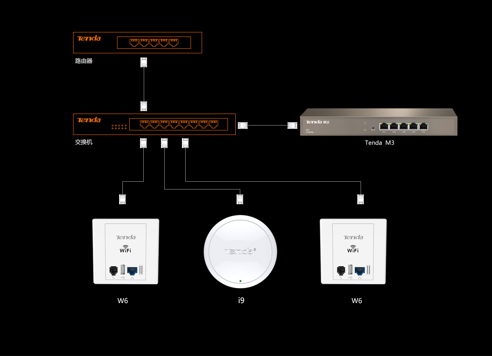

员工随意上网，工作效率低
上网权限分配机制差，办公应用运行缓慢
设备不专业，带机量少且覆盖有限，易卡顿
针对办公应用，提供了VLAN、多SSID、应用识别、带宽控制等多种功能，确保员工高效工作，清晰划分部门权限，同时，建立合理的
独立数据通道，避免了因人数较多，而带来网络的运行的卡顿。独有针对办公的优化，移动办公的好搭档
PAD、智能手机、笔记本电脑在办公领域中的广泛应用， BYOD带给了办公新的革命，腾达领先的技术解决方案，使得企业的移动办公
变得没有阻碍，无线漫游、自动信道调节等，为移动办公构筑了高质量的Wi-Fi网络。
腾达企业无线通全系产品均采用先进的Broadcom 芯片方案，并专门针对无线干扰和无线终端接入数量进行信号的多次优化，推出多重
无线抗干扰技术，智能终端接入控制技术，能够为您的办公提供最稳定的上网体验，且能通过增加AP的方式轻松实现无线网络扩展。
腾达企业无线通支持AP管理功能，可统一管理所有AP，随时查看AP和客户端联网状态，轻松运维。
腾达企业无线通提供工业级加密、VLAN技术、多SSID等多种网络安全技术，可实现办公网络与访客 网络的隔离，并支持安防监控系统
的接入，提供由外到内最全面的保护。
时间就是效益！腾达企业无线通AP支持PoE供电和DC
电源供电，您可根据部署环境灵活选择，施工更方便
快捷。
1、可针对新装和升级用户，提供适合用户的方案；
2、办公覆盖既可选用吸顶AP，入墙式AP作为搭配，组网灵活，方便客户选择；
3、路由器自带AP管理功能，可统一管理所有AP，只需要调试一台设备，即可实现全网运行；
4、POE交换机及非POE交换机的使用，可根据客户成本要求，自行选择搭配。
| 设备类型 | 设备型号 | 用途特点 |
|---|---|---|
| 路由器 | G3 | 博通双核800MHz处理器 最大支持4WAN口，线路备份 200人带机量 负载均衡、流量控制、行为管理、网址过滤 |
| 核心交换机 | TEG1024G | 24口全千兆可上机架 支持端口汇聚、端口隔离 6Kv 防雷设计 |
| POE交换机 | TEF1109P | 支持802.3at/af供电标准,单口最大输出40W 一键划分VLAN 智能功率管理，1-8口802.3af 供电或任意4口802.3at供电 |
| AP | i9 | 最大带机15人 高功率吸顶式设计 支持控制器管理 |
| AP控制器 | M3 | 自动发现并管理AP，最大支持128个 支持跨VLAN管理 支持SSID和QVLAN映射和状态异常告警 |
| 入墙AP | W6 | 最大带机10人 入墙式设计，带USB充电口及网线、电话线接口 支持控制器管理 |